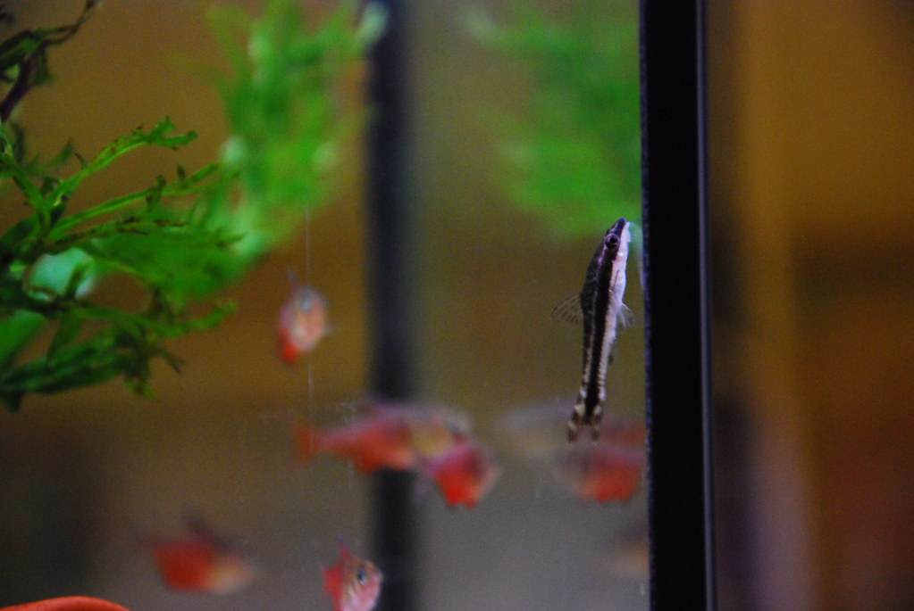

The Otocinclus catfish is an aquarium algae eater. They usually like to suck on the glass of the aquarium to eat the algae. In addition to that, they also like to eat waste on the bottom of the tank. They grow to be about 2.5 inches. They are peaceful fish, so they will not attack other fish.
"Otocinclus affinis" by lejoe is licensed under CC BY 2.0 https://search.creativecommons.org/photos/04226b35-8ffd-4e9e-9091-3a4b87313035